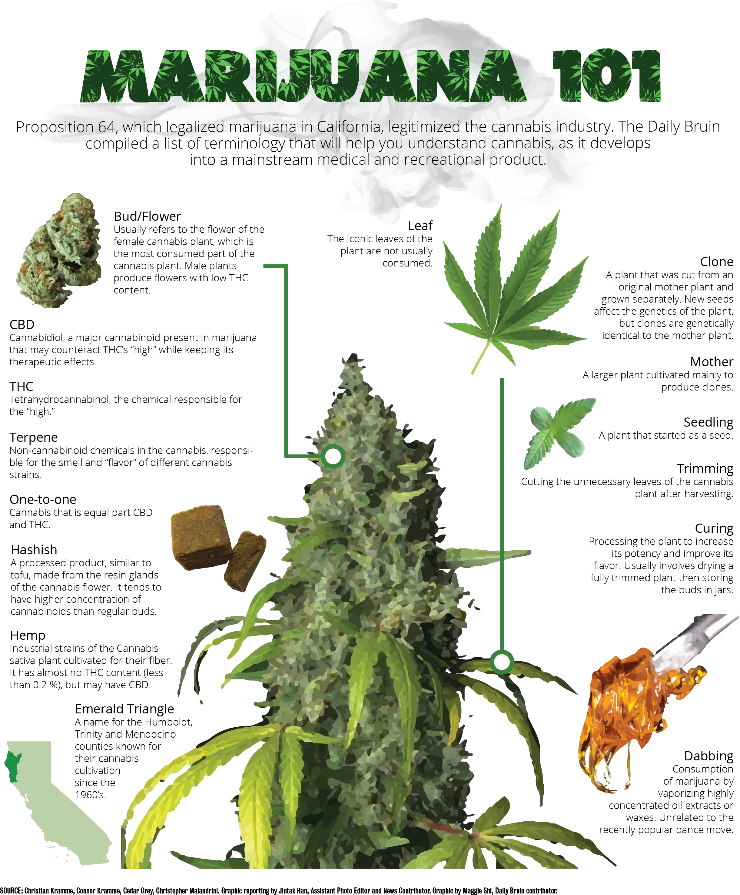

Proposition 64 passed last November, legalizing recreational marijuana use in California. When it goes into full effect on January 1, 2018, UCLA students and anyone 21 or older will be able to buy marijuana from stores with retail licenses. Currently, students 21 and over can possess up to 28.5 grams of marijuana and grow up to six plants.
Rodrigo Aranda was cleaning out the trash in his car when he found the bag of marijuana.
Aranda had always refrained from doing drugs with his friends because he had been too busy with schoolwork. However, he was going through a tough breakup the summer after his senior year of high school and did not have school to preoccupy him.
“I grabbed an apple, poked a hole through it, packed it and took a hit,” Aranda said. “That’s when I started to slowly pick up smoking recreationally.”
In marijuana, though, Aranda saw a business opportunity. He said he was tired of the endless cycle of work, school and studying, so he started to calculate how much money he could earn by growing marijuana.
“I grew up in poverty,” he said. “Seeing how much money one can potentially make from growing a plant just made me so energetic and hopeful, like a get-rich-quick scheme – how hard can it be to grow a plant and harvest it?”
After studying at UCLA for a year, Aranda left the university in fall 2016 to pursue business in the cannabis industry. At first, he and his friends attempted to grow marijuana in their apartment but failed several times because they were inexperienced in the cultivation of such a light-sensitive plant.
Although he did eventually produce a successful grow, Aranda said he did not find his niche until experiencing a different aspect of cannabis production: distribution. He was hired by a company called Nanofarms to distribute marijuana, where he received a 10 percent commission for every pound sold.
“I got so money-hungry because I was making so much money so fast with these packs,” he said. “I would break them up on the streets because I would make more money … on the streets than I would selling them to shops.”
He said he was making $1,000 to $2,000 every day for a month before things took a turn for the worse.
On Christmas eve, Aranda was robbed in east Los Angeles.

“I was a bad drug deal, really,” Aranda said. “In total, (I lost about) $12,000. I know exactly who it was, I know exactly where they live and that’s the crazy thing.”
He said he has been trying to rebound from the loss since then. Although he does not plan to leave the cannabis industry, he wants to return to UCLA next fall to finish his undergraduate education. He said after dealing with police officers who often mistreat people on the streets, he is inspired to focus on school, get good grades and go to law school to help people who are uninformed with the law.
“The only bad thing that marijuana’s brought to me is just the debt from getting around and being in this hole because of (the robbery),” Aranda said. “That’s why I want to come back to school so bad, because UCLA was such a nice bubble.”
But he said he does not regret taking the past two quarters off to explore the cannabis industry.
“I’ve learned more in the last four months about life than I have ever in my 21 years of being on the planet,” he said. “People just need to go out and experience real life, because I feel that what I’ve been through has really shaped me as a person.”
Three years ago, Christian Kramme got out of another 12-hour scalding shower in his freshman dorm and felt freezing cold. He knew he only had a couple moments before he started vomiting again.
Kramme, a third-year microbiology, immunology and molecular genetics student, was suffering from a self-diagnosed cannabinoid hyperemesis syndrome, the first and only known condition associated with cannabis use.
The disorder, which appeared recently in correlation with marijuana’s increasing popularity, is characterized by chronic cannabis use and involves frequent hot bathing and cycles of vomiting.Kramme had a large tetrahydrocannabinol metabolite, or THC, buildup in his brain, caused by four years of daily cannabis use. The excessive residual THC molecules in his brain caused the dysregulation of homeostatic functions in his body.
“I trained my stomach to think that I (could not) be hungry without cannabis,” Kramme said. “I didn’t eat without smoking first, and that, over four years, led to a serious problem.”
He said the debilitating condition caused him to lose 20 pounds and induced much of his anxiety.
“I would get out (of the shower and) hear extremely loud ringing in my ears,” Kramme said. “My head is hot and my feet are ice cold. I’m vomiting, and it’s like that for hours -- and every time I get into the shower, I’m perfectly fine.”
It’s a bell curve, he said. At first, THC is a great anti-nausea medicine until you hit a peak and keep smoking – then it causes nausea. Similarly, cannabidiol, or CBD, can eliminate a lot of anxieties, but if people smoke just CBD, they will experience some of the worst panic attacks.
The key is moderation -- people need to have a little bit of everything, not just THC, he said. People who have cannabinoid hyperemesis syndrome are often associated with dabbing, or smoking wax with a 97 percent THC content.
“This problem is really (messed) up because the better weed you have – more THC – the worst this condition gets,” Kramme said. “I either had to go smoke really crappy weed or just don’t smoke at all.”
It’s amazing how quickly it turned around, he said.

After starting to smoke robust and terpene-rich marijuana that he grew outdoors with a one-to-one THC to CBD ratio, Kramme said he stopped experiencing symptoms. The quality and content of the product he consumes now has not debilitated him at all, despite smoking even more marijuana.
“What has changed my life more than anything in the last year has been CBD,” he said. “It is the best cannabinoid. Every problem that there is with THC -- the stoner effect, the fatigue, the buildup, the lethargy, loss of appetite, loss of ambition -- all can be avoided with CBD.”
Now that Proposition 64 has legalized marijuana in California, Kramme said he is excited to go to a dispensary and see a test result of what is in his marijuana, then make the decision to buy and consume it. Previously, lab testing was not required and consumers had no way of verifying exactly what was in their marijuana before smoking it.
After experiencing cannabinoid hyperemesis syndrome, Kramme is careful to smoke in moderation, with equal ratios of THC and CBD.
He said he hopes to finish the rest of his UCLA education as soon as possible, so he can pursue a doctorate and conduct more research about cannabis, especially because of its rising prominence in California.
As owners of a medical marijuana company, he and his brother Connor Kramme, a recent University of California, Berkeley, alumnus, make it a point to test their products and ensure high-level CBD flower for smoking at their family-owned cannabis farm in Siskiyou County.
Although Proposition 64 allows individuals to grow their own marijuana for personal use, Connor said he thinks the differentiation between recreational and medical marijuana remains a very gray area.
“There’s going to be a marriage of recreational and medical that I think is going to occur,” Connor said. “Everything needs to be done in moderation and for a specific reason.”
After Christian’s experience with cannabinoid hyperemesis syndrome three years ago, the brothers agree that people who smoke recreationally and medically should be cognizant of the contents of their marijuana.
Regulation is a good thing because consumers deserve transparency, Connor said. Consumers should always look for lab testing and understand where their products come from and how they are grown.
Connor added he is working with local legislators to ensure that growers do not have to compete for resources, time and management with Humboldt, Los Angeles and San Francisco, other locations where the cannabis market is centralized.
“I’m representing the commercial growers … and that we would like to be able to take everyone’s product and show them what northern California cannabis is,” he said. “It’s really about pooling everyone together, creating a big voting block.”
He said he wants to reinspire farmers who have been used and abused by the system to start thinking bigger in a way that allows them to impact the state.
“In this transition, I’m really trying to stay up to date,” Connor said. “It’s really about local activism.”
When they are not meeting with local legislators and community leaders, Connor and Christian Kramme go fishing in the nearby river hugging their 64-acre land and smoke marijuana together to relax.
They are recuperating from a long day of manual work at the farm.
“I would be able to actually recover quickly (because of smoking),” Connor said. “The next day, (I would) wake up refreshed, ready to go and do it again.”
Located at the tip of what is commonly known as the Emerald Triangle, Siskiyou County is home to a population of just 111 people, of whom more than 100 are growers who make their livelihood by cultivating cannabis.
As young entrepreneurs and members of this largely cannabis-dependent community, the Krammes suit up in their work clothes every morning to carefully inspect rows of their large, flowering 200-plant garden.
After singing and playing music to their plants under the blazing hot sun during growing season, the brothers spend about four hours watering the garden and take samples of every cannabis plant to analyze under a microscope for any flaws.

With the passage of Proposition 64, the Krammes are quickly turning their nonprofit corporation into a commercial company.
“We have an opportunity here to take what (farmers have) been fighting for to the next level, and to bring (cannabis) to a wider audience,” Connor said.
He said he thinks cannabis can start helping patients get off opiates and benzodiazepines, potentially even treating their cancers.

After years of using cannabis to treat their pain, anxiety and appetite, the Kramme brothers are inspired to produce quality marijuana to help patients treat their conditions.
But everyday presents a new challenge, Connor said.
Last year, the brothers spent the growing season living in a trailer and painstakingly tending to their plants everyday. They said they started growing late, so their plants were small compared to other farmers in the area.
Regardless, the brothers said they are eager to grow an even more successful harvest this year because they have learned from last year’s mistakes.
“I really feel like we’ve perfected our craft and it’s really meaningful to me,” Connor said. “To care for something so deeply was absolutely amazing. That was every day -- we were blessed to have that.”
Contact Chiu at echiu@dailybruin.com or tweet @k4456935.